注：该代码为DeepMind公布的基于Tensorflow实现的GMN模型，理论与实现相配合，若需基于pytorch框架的GMN模型实现代码，请关注我的GitHub。
Refference：DeepMindGraph Matching Networks for Learning the Similarity of Graph Structured Objects
This is the example code for our ICML 2019 paper. Please refer to the paper for more details:
Yujia Li, Chenjie Gu, Thomas Dullien, Oriol Vinyals, Pushmeet Kohli. Graph Matching Networks for Learning the Similarity of Graph Structured Objects. ICML 2019. [arXiv]
Graph similarity learning
Our goal is to learn a similarity function between graphs. Given two graphs $G_1, G_2$, a graph similarity model can be written as a function $f(G_1, G_2)$ that computes a scalar similarity value.
In this project we build models to learn such a similarity function based on examples of similar / dissimilar pairs or triplets. Because of learning, our model can adapt to different notions of similarity and to different types of graph structure, as long as training data is available.
In the following we will sometimes use the term “distance” and say the model learns a “distance function” $d(G_1, G_2)$ between graphs when convenient. But this is just the opposite of a similarity function, and you may simply say $f(G_1, G_2) = - d(G_1, G_2)$.
Some dependencies and imports
If you want to run the notebook locally, make sure you have all the dependencies first. You can use the following command
pip3 install --user -r requirements.txtNote the code should work for both python 3 and 2, but python 3 is recommended.
# Let's disable all the warnings first
import warnings
warnings.simplefilter("ignore")These are all the dependencies that will be used in this notebook.
import abc
import collections
import contextlib
import copy
import random
import time
import matplotlib.pyplot as plt
import networkx as nx
import numpy as np
import six
import sonnet as snt
import tensorflow as tfThe models
The graph embedding model
The simpler variant of our model is based on embedding each graph independently into a vector and then use an existing distance (or similarity) metric in the vector space to compute the distance between graphs. More concretely, we define
$$d(G_1, G_2) = d_H(embed(G_1), embed(G_2)),$$
where $embed$ is a model that maps any graph $G$ into an $H$-dimensional vector, and $d_H$ is a distance metric in that vector space. Typical examples are Euclidean distance in $\mathbb{R}^H$, i.e. $d_H(x, y) = \sqrt{\sum_{i=1}^H (x_i - y_i)^2}$, or Hamming distance in $H$-dimensional space of binary vectors, i.e. $d_H(x, y)=\sum_{i=1}^H \mathbb{I}[x_i \ne y_i]$.
Each graph input contains a set of nodes $V$ and edges $E$. Each node $i\in V$ may have a feature vector $x_i$ associated with it, and each edge $(i, j)\in E$ may also have a feature vector $x_{ij}$ encoding e.g. edge type or attributes. The embedding model will therefore jointly reason about the graph structure as well as the graph features to come up with an embedding that reflects the notion of similarity described by the training examples.
The embedding model is composed of 3 parts:
An encoder that maps $x_i$ and $x_{ij}$ into a nice hidden representation space. Here we use separate MLPs (fully connected neural nets) for node and edge representations:
$$\begin{array}{rcl}
h_i^{(0)} &=& \mathrm{MLP_{node}}(x_i) \
e_{ij} &=& \mathrm{MLP_{edge}}(x_{ij})
\end{array}
$$A graph neural network (GNN) that communicates information across the graph and computes node representations that encode local neighborhood structure and semantics. More concretely, the GNN computes node representations through an iterative message passing process. In the $t$-th round of message passing, we compute a message vector on each edge, and then each node aggregates all the incoming messages and updates its own representation:
$$\begin{array}{rcl}
m_{i\rightarrow j} &=& f_\mathrm{message}(h_i^{(t)}, h_j^{(t)}, e_{ij}) \
h_i^{(t+1)} &=& f_\mathrm{node}(h_i^{(t)}, \sum_{j:(j,i)\in E} m_{j\rightarrow i})
\end{array}
$$
Here both $f_\mathrm{message}$ and $f_\mathrm{node}$ are neural modules. We use MLPs for $f_\mathrm{message}$, while $f_\mathrm{node}$ can also be MLPs or even recurrent neural network cores like LSTMs or GRUs. The GNNs have the nice property of being equivariant to node permutations, and nodes on isomorphic graphs (with the same node and edge features) will have the same representations regardless of the ordering.After we obtained the final node representations after $T$ rounds of message passing, we aggregate across them to get graph representations $h_G=f_G({h_i^{(T)}}{i\in V})$. This could be implemented by a simple sum that reduces the node representations into a single vector and then transform it:
$$h_G = \mathrm{MLP_G}\left(\sum{i\in V} h_i^{(T)}\right).$$
We used the following gated aggregation module proposed in Li et al., 2015 which we found to work consistently better:
$$h_G = \mathrm{MLP_G}\left(\sum_{i\in V} \sigma(\mathrm{MLP_{gate}}(h_i^{(T)})) \odot \mathrm{MLP}(h_i^{(T)})\right).$$
The key to this function is to make sure it is invariant to node orderings, both the above forms satisfy this condition. The gated variant gives the model the capacity to explicitly modulate each node’s contribution to the graph representation.
The graph encoder
class GraphEncoder(snt.AbstractModule):
"""Encoder module that projects node and edge features to some embeddings."""
def __init__(self,
node_hidden_sizes=None,
edge_hidden_sizes=None,
name='graph-encoder'):
"""Constructor.
Args:
node_hidden_sizes: if provided should be a list of ints, hidden sizes of
node encoder network, the last element is the size of the node outputs.
If not provided, node features will pass through as is.
edge_hidden_sizes: if provided should be a list of ints, hidden sizes of
edge encoder network, the last element is the size of the edge outptus.
If not provided, edge features will pass through as is.
name: name of this module.
"""
super(GraphEncoder, self).__init__(name=name)
# this also handles the case of an empty list
self._node_hidden_sizes = node_hidden_sizes if node_hidden_sizes else None
self._edge_hidden_sizes = edge_hidden_sizes
def _build(self, node_features, edge_features=None):
"""Encode node and edge features.
Args:
node_features: [n_nodes, node_feat_dim] float tensor.
edge_features: if provided, should be [n_edges, edge_feat_dim] float
tensor.
Returns:
node_outputs: [n_nodes, node_embedding_dim] float tensor, node embeddings.
edge_outputs: if edge_features is not None and edge_hidden_sizes is not
None, this is [n_edges, edge_embedding_dim] float tensor, edge
embeddings; otherwise just the input edge_features.
"""
if self._node_hidden_sizes is None:
node_outputs = node_features
else:
node_outputs = snt.nets.MLP(
self._node_hidden_sizes, name='node-feature-mlp')(node_features)
if edge_features is None or self._edge_hidden_sizes is None:
edge_outputs = edge_features
else:
edge_outputs = snt.nets.MLP(
self._edge_hidden_sizes, name='edge-feature-mlp')(edge_features)
return node_outputs, edge_outputsThe message passing layers
def graph_prop_once(node_states,
from_idx,
to_idx,
message_net,
aggregation_module=tf.unsorted_segment_sum,
edge_features=None):
"""One round of propagation (message passing) in a graph.
Args:
node_states: [n_nodes, node_state_dim] float tensor, node state vectors, one
row for each node.
from_idx: [n_edges] int tensor, index of the from nodes.
to_idx: [n_edges] int tensor, index of the to nodes.
message_net: a network that maps concatenated edge inputs to message
vectors.
aggregation_module: a module that aggregates messages on edges to aggregated
messages for each node. Should be a callable and can be called like the
following,
`aggregated_messages = aggregation_module(messages, to_idx, n_nodes)`,
where messages is [n_edges, edge_message_dim] tensor, to_idx is the index
of the to nodes, i.e. where each message should go to, and n_nodes is an
int which is the number of nodes to aggregate into.
edge_features: if provided, should be a [n_edges, edge_feature_dim] float
tensor, extra features for each edge.
Returns:
aggregated_messages: an [n_nodes, edge_message_dim] float tensor, the
aggregated messages, one row for each node.
"""
from_states = tf.gather(node_states, from_idx)
to_states = tf.gather(node_states, to_idx)
edge_inputs = [from_states, to_states]
if edge_features is not None:
edge_inputs.append(edge_features)
edge_inputs = tf.concat(edge_inputs, axis=-1)
messages = message_net(edge_inputs)
return aggregation_module(messages, to_idx, tf.shape(node_states)[0])
class GraphPropLayer(snt.AbstractModule):
"""Implementation of a graph propagation (message passing) layer."""
def __init__(self,
node_state_dim,
edge_hidden_sizes,
node_hidden_sizes,
edge_net_init_scale=0.1,
node_update_type='residual',
use_reverse_direction=True,
reverse_dir_param_different=True,
layer_norm=False,
name='graph-net'):
"""Constructor.
Args:
node_state_dim: int, dimensionality of node states.
edge_hidden_sizes: list of ints, hidden sizes for the edge message
net, the last element in the list is the size of the message vectors.
node_hidden_sizes: list of ints, hidden sizes for the node update
net.
edge_net_init_scale: initialization scale for the edge networks. This
is typically set to a small value such that the gradient does not blow
up.
node_update_type: type of node updates, one of {mlp, gru, residual}.
use_reverse_direction: set to True to also propagate messages in the
reverse direction.
reverse_dir_param_different: set to True to have the messages computed
using a different set of parameters than for the forward direction.
layer_norm: set to True to use layer normalization in a few places.
name: name of this module.
"""
super(GraphPropLayer, self).__init__(name=name)
self._node_state_dim = node_state_dim
self._edge_hidden_sizes = edge_hidden_sizes[:]
# output size is node_state_dim
self._node_hidden_sizes = node_hidden_sizes[:] + [node_state_dim]
self._edge_net_init_scale = edge_net_init_scale
self._node_update_type = node_update_type
self._use_reverse_direction = use_reverse_direction
self._reverse_dir_param_different = reverse_dir_param_different
self._layer_norm = layer_norm
def _compute_aggregated_messages(
self, node_states, from_idx, to_idx, edge_features=None):
"""Compute aggregated messages for each node.
Args:
node_states: [n_nodes, input_node_state_dim] float tensor, node states.
from_idx: [n_edges] int tensor, from node indices for each edge.
to_idx: [n_edges] int tensor, to node indices for each edge.
edge_features: if not None, should be [n_edges, edge_embedding_dim]
tensor, edge features.
Returns:
aggregated_messages: [n_nodes, aggregated_message_dim] float tensor, the
aggregated messages for each node.
"""
self._message_net = snt.nets.MLP(
self._edge_hidden_sizes,
initializers={
'w': tf.variance_scaling_initializer(
scale=self._edge_net_init_scale),
'b': tf.zeros_initializer()},
name='message-mlp')
aggregated_messages = graph_prop_once(
node_states,
from_idx,
to_idx,
self._message_net,
aggregation_module=tf.unsorted_segment_sum,
edge_features=edge_features)
# optionally compute message vectors in the reverse direction
if self._use_reverse_direction:
if self._reverse_dir_param_different:
self._reverse_message_net = snt.nets.MLP(
self._edge_hidden_sizes,
initializers={
'w': tf.variance_scaling_initializer(
scale=self._edge_net_init_scale),
'b': tf.zeros_initializer()},
name='reverse-message-mlp')
else:
self._reverse_message_net = self._message_net
reverse_aggregated_messages = graph_prop_once(
node_states,
to_idx,
from_idx,
self._reverse_message_net,
aggregation_module=tf.unsorted_segment_sum,
edge_features=edge_features)
aggregated_messages += reverse_aggregated_messages
if self._layer_norm:
aggregated_messages = snt.LayerNorm()(aggregated_messages)
return aggregated_messages
def _compute_node_update(self,
node_states,
node_state_inputs,
node_features=None):
"""Compute node updates.
Args:
node_states: [n_nodes, node_state_dim] float tensor, the input node
states.
node_state_inputs: a list of tensors used to compute node updates. Each
element tensor should have shape [n_nodes, feat_dim], where feat_dim can
be different. These tensors will be concatenated along the feature
dimension.
node_features: extra node features if provided, should be of size
[n_nodes, extra_node_feat_dim] float tensor, can be used to implement
different types of skip connections.
Returns:
new_node_states: [n_nodes, node_state_dim] float tensor, the new node
state tensor.
Raises:
ValueError: if node update type is not supported.
"""
if self._node_update_type in ('mlp', 'residual'):
node_state_inputs.append(node_states)
if node_features is not None:
node_state_inputs.append(node_features)
if len(node_state_inputs) == 1:
node_state_inputs = node_state_inputs[0]
else:
node_state_inputs = tf.concat(node_state_inputs, axis=-1)
if self._node_update_type == 'gru':
_, new_node_states = snt.GRU(self._node_state_dim)(
node_state_inputs, node_states)
return new_node_states
else:
mlp_output = snt.nets.MLP(
self._node_hidden_sizes, name='node-mlp')(node_state_inputs)
if self._layer_norm:
mlp_output = snt.LayerNorm()(mlp_output)
if self._node_update_type == 'mlp':
return mlp_output
elif self._node_update_type == 'residual':
return node_states + mlp_output
else:
raise ValueError('Unknown node update type %s' % self._node_update_type)
def _build(self,
node_states,
from_idx,
to_idx,
edge_features=None,
node_features=None):
"""Run one propagation step.
Args:
node_states: [n_nodes, input_node_state_dim] float tensor, node states.
from_idx: [n_edges] int tensor, from node indices for each edge.
to_idx: [n_edges] int tensor, to node indices for each edge.
edge_features: if not None, should be [n_edges, edge_embedding_dim]
tensor, edge features.
node_features: extra node features if provided, should be of size
[n_nodes, extra_node_feat_dim] float tensor, can be used to implement
different types of skip connections.
Returns:
node_states: [n_nodes, node_state_dim] float tensor, new node states.
"""
aggregated_messages = self._compute_aggregated_messages(
node_states, from_idx, to_idx, edge_features=edge_features)
return self._compute_node_update(node_states,
[aggregated_messages],
node_features=node_features)Graph aggregator
AGGREGATION_TYPE = {
'sum': tf.unsorted_segment_sum,
'mean': tf.unsorted_segment_mean,
'sqrt_n': tf.unsorted_segment_sqrt_n,
'max': tf.unsorted_segment_max,
}
class GraphAggregator(snt.AbstractModule):
"""This module computes graph representations by aggregating from parts."""
def __init__(self,
node_hidden_sizes,
graph_transform_sizes=None,
gated=True,
aggregation_type='sum',
name='graph-aggregator'):
"""Constructor.
Args:
node_hidden_sizes: the hidden layer sizes of the node transformation nets.
The last element is the size of the aggregated graph representation.
graph_transform_sizes: sizes of the transformation layers on top of the
graph representations. The last element of this list is the final
dimensionality of the output graph representations.
gated: set to True to do gated aggregation, False not to.
aggregation_type: one of {sum, max, mean, sqrt_n}.
name: name of this module.
"""
super(GraphAggregator, self).__init__(name=name)
self._node_hidden_sizes = node_hidden_sizes
self._graph_transform_sizes = graph_transform_sizes
self._graph_state_dim = node_hidden_sizes[-1]
self._gated = gated
self._aggregation_type = aggregation_type
self._aggregation_op = AGGREGATION_TYPE[aggregation_type]
def _build(self, node_states, graph_idx, n_graphs):
"""Compute aggregated graph representations.
Args:
node_states: [n_nodes, node_state_dim] float tensor, node states of a
batch of graphs concatenated together along the first dimension.
graph_idx: [n_nodes] int tensor, graph ID for each node.
n_graphs: integer, number of graphs in this batch.
Returns:
graph_states: [n_graphs, graph_state_dim] float tensor, graph
representations, one row for each graph.
"""
node_hidden_sizes = self._node_hidden_sizes
if self._gated:
node_hidden_sizes[-1] = self._graph_state_dim * 2
node_states_g = snt.nets.MLP(
node_hidden_sizes, name='node-state-g-mlp')(node_states)
if self._gated:
gates = tf.nn.sigmoid(node_states_g[:, :self._graph_state_dim])
node_states_g = node_states_g[:, self._graph_state_dim:] * gates
graph_states = self._aggregation_op(node_states_g, graph_idx, n_graphs)
# unsorted_segment_max does not handle empty graphs in the way we want
# it assigns the lowest possible float to empty segments, we want to reset
# them to zero.
if self._aggregation_type == 'max':
# reset everything that's smaller than -1e5 to 0.
graph_states *= tf.cast(graph_states > -1e5, tf.float32)
# transform the reduced graph states further
# pylint: disable=g-explicit-length-test
if (self._graph_transform_sizes is not None and
len(self._graph_transform_sizes) > 0):
graph_states = snt.nets.MLP(
self._graph_transform_sizes, name='graph-transform-mlp')(graph_states)
return graph_statesPutting them together
class GraphEmbeddingNet(snt.AbstractModule):
"""A graph to embedding mapping network."""
def __init__(self,
encoder,
aggregator,
node_state_dim,
edge_hidden_sizes,
node_hidden_sizes,
n_prop_layers,
share_prop_params=False,
edge_net_init_scale=0.1,
node_update_type='residual',
use_reverse_direction=True,
reverse_dir_param_different=True,
layer_norm=False,
name='graph-embedding-net'):
"""Constructor.
Args:
encoder: GraphEncoder, encoder that maps features to embeddings.
aggregator: GraphAggregator, aggregator that produces graph
representations.
node_state_dim: dimensionality of node states.
edge_hidden_sizes: sizes of the hidden layers of the edge message nets.
node_hidden_sizes: sizes of the hidden layers of the node update nets.
n_prop_layers: number of graph propagation layers.
share_prop_params: set to True to share propagation parameters across all
graph propagation layers, False not to.
edge_net_init_scale: scale of initialization for the edge message nets.
node_update_type: type of node updates, one of {mlp, gru, residual}.
use_reverse_direction: set to True to also propagate messages in the
reverse direction.
reverse_dir_param_different: set to True to have the messages computed
using a different set of parameters than for the forward direction.
layer_norm: set to True to use layer normalization in a few places.
name: name of this module.
"""
super(GraphEmbeddingNet, self).__init__(name=name)
self._encoder = encoder
self._aggregator = aggregator
self._node_state_dim = node_state_dim
self._edge_hidden_sizes = edge_hidden_sizes
self._node_hidden_sizes = node_hidden_sizes
self._n_prop_layers = n_prop_layers
self._share_prop_params = share_prop_params
self._edge_net_init_scale = edge_net_init_scale
self._node_update_type = node_update_type
self._use_reverse_direction = use_reverse_direction
self._reverse_dir_param_different = reverse_dir_param_different
self._layer_norm = layer_norm
self._prop_layers = []
self._layer_class = GraphPropLayer
def _build_layer(self, layer_id):
"""Build one layer in the network."""
return self._layer_class(
self._node_state_dim,
self._edge_hidden_sizes,
self._node_hidden_sizes,
edge_net_init_scale=self._edge_net_init_scale,
node_update_type=self._node_update_type,
use_reverse_direction=self._use_reverse_direction,
reverse_dir_param_different=self._reverse_dir_param_different,
layer_norm=self._layer_norm,
name='graph-prop-%d' % layer_id)
def _apply_layer(self,
layer,
node_states,
from_idx,
to_idx,
graph_idx,
n_graphs,
edge_features):
"""Apply one layer on the given inputs."""
del graph_idx, n_graphs
return layer(node_states, from_idx, to_idx, edge_features=edge_features)
def _build(self,
node_features,
edge_features,
from_idx,
to_idx,
graph_idx,
n_graphs):
"""Compute graph representations.
Args:
node_features: [n_nodes, node_feat_dim] float tensor.
edge_features: [n_edges, edge_feat_dim] float tensor.
from_idx: [n_edges] int tensor, index of the from node for each edge.
to_idx: [n_edges] int tensor, index of the to node for each edge.
graph_idx: [n_nodes] int tensor, graph id for each node.
n_graphs: int, number of graphs in the batch.
Returns:
graph_representations: [n_graphs, graph_representation_dim] float tensor,
graph representations.
"""
if len(self._prop_layers) < self._n_prop_layers:
# build the layers
for i in range(self._n_prop_layers):
if i == 0 or not self._share_prop_params:
layer = self._build_layer(i)
else:
layer = self._prop_layers[0]
self._prop_layers.append(layer)
node_features, edge_features = self._encoder(node_features, edge_features)
node_states = node_features
layer_outputs = [node_states]
for layer in self._prop_layers:
# node_features could be wired in here as well, leaving it out for now as
# it is already in the inputs
node_states = self._apply_layer(
layer,
node_states,
from_idx,
to_idx,
graph_idx,
n_graphs,
edge_features)
layer_outputs.append(node_states)
# these tensors may be used e.g. for visualization
self._layer_outputs = layer_outputs
return self._aggregator(node_states, graph_idx, n_graphs)
def reset_n_prop_layers(self, n_prop_layers):
"""Set n_prop_layers to the provided new value.
This allows us to train with certain number of propagation layers and
evaluate with a different number of propagation layers.
This only works if n_prop_layers is smaller than the number used for
training, or when share_prop_params is set to True, in which case this can
be arbitrarily large.
Args:
n_prop_layers: the new number of propagation layers to set.
"""
self._n_prop_layers = n_prop_layers
@property
def n_prop_layers(self):
return self._n_prop_layers
def get_layer_outputs(self):
"""Get the outputs at each layer."""
if hasattr(self, '_layer_outputs'):
return self._layer_outputs
else:
raise ValueError('No layer outputs available.')The graph matching networks
The graph matching networks (GMNs) compute the similarity score for a pair of graphs jointly on the pair. In our current formulation, it still computes a representation for each graph, but the representations for a pair of graphs are computed jointly on the pair, through a cross-graph attention-based matching mechanism.
More concretely, the graph matching model can be formulated as
$$d(G_1, G_2) = d_H(embed_and_match(G_1, G_2))$$
where $embed_and_match(G_1, G_2)$ returns a pair of graph representations.
Similar to the embedding model, our GMNs computes graph representations through 3 steps. The difference to the embedding model is in the message passing step, where each node not only gets messages from within the same graph, but also gets cross-graph messages by attending to all the nodes in the other graph. This can be formulated as follows.
We first have within-graph messages as before:
$$
m_{i\rightarrow j} = f_\mathrm{message}(h_i^{(t)}, h_j^{(t)}, e_{ij}).
$$
In addition, we also allow each node in one graph to attend to all the other nodes in the other graph. The cross graph attention weight (node $i$ in one graph attending to node $j$ in the other graph, and vice versa) is computed as
$$\begin{array}{rcl}
a_{i\rightarrow j} &=& \frac{\exp(s(h_i^{(t)}, h_j^{(t)}))}{\sum_j \exp(s(h_i^{(t)}, h_j^{(t)}))} \
a_{j\rightarrow i} &=& \frac{\exp(s(h_i^{(t)}, h_j^{(t)}))}{\sum_i \exp(s(h_i^{(t)}, h_j^{(t)}))},
\end{array}
$$
where $s(., .)$ is again a vector space similarity function, like Euclidean, dot-product or cosine. Also note the different indices being summed over in the normalizers.
The cross-graph message is then computed as
$$\begin{array}{rcl}
\mu_i &=& \sum_j a_{i\rightarrow j} (h_i^{(t)} - h_j^{(t)}) = h_i^{(t)} - \sum_j a_{i\rightarrow j} h_j^{(t)}, \
\mu_j &=& \sum_i a_{j\rightarrow i} (h_j^{(t)} - h_i^{(t)}) = h_j^{(t)} - \sum_i a_{j\rightarrow i} h_i^{(t)}.
\end{array}
$$
Here we are computing an attention-weighted sum of all the node representations from the other graph, and then take the difference. This is essentially matching one node in one graph to nodes most similar to it in the other graph, and then compute the difference.
The node updates are then computed as
$$
h_i^{(t+1)} = f_\mathrm{node}\left(h_i^{(t)}, \sum_{j:(j,i)\in E} m_{j\rightarrow i}, \mu_i\right).
$$
The graph encoder and the graph aggregators are the same as in the embedding model.
A few similarity functions
These are the functions $s(., .)$ that will be used in the cross-graph attention.
def pairwise_euclidean_similarity(x, y):
"""Compute the pairwise Euclidean similarity between x and y.
This function computes the following similarity value between each pair of x_i
and y_j: s(x_i, y_j) = -|x_i - y_j|^2.
Args:
x: NxD float tensor.
y: MxD float tensor.
Returns:
s: NxM float tensor, the pairwise euclidean similarity.
"""
s = 2 * tf.matmul(x, y, transpose_b=True)
diag_x = tf.reduce_sum(x * x, axis=-1, keepdims=True)
diag_y = tf.reshape(tf.reduce_sum(y * y, axis=-1), (1, -1))
return s - diag_x - diag_y
def pairwise_dot_product_similarity(x, y):
"""Compute the dot product similarity between x and y.
This function computes the following similarity value between each pair of x_i
and y_j: s(x_i, y_j) = x_i^T y_j.
Args:
x: NxD float tensor.
y: MxD float tensor.
Returns:
s: NxM float tensor, the pairwise dot product similarity.
"""
return tf.matmul(x, y, transpose_b=True)
def pairwise_cosine_similarity(x, y):
"""Compute the cosine similarity between x and y.
This function computes the following similarity value between each pair of x_i
and y_j: s(x_i, y_j) = x_i^T y_j / (|x_i||y_j|).
Args:
x: NxD float tensor.
y: MxD float tensor.
Returns:
s: NxM float tensor, the pairwise cosine similarity.
"""
x = tf.nn.l2_normalize(x, axis=-1)
y = tf.nn.l2_normalize(y, axis=-1)
return tf.matmul(x, y, transpose_b=True)
PAIRWISE_SIMILARITY_FUNCTION = {
'euclidean': pairwise_euclidean_similarity,
'dotproduct': pairwise_dot_product_similarity,
'cosine': pairwise_cosine_similarity,
}
def get_pairwise_similarity(name):
"""Get pairwise similarity metric by name.
Args:
name: string, name of the similarity metric, one of {dot-product, cosine,
euclidean}.
Returns:
similarity: a (x, y) -> sim function.
Raises:
ValueError: if name is not supported.
"""
if name not in PAIRWISE_SIMILARITY_FUNCTION:
raise ValueError('Similarity metric name "%s" not supported.' % name)
else:
return PAIRWISE_SIMILARITY_FUNCTION[name]The cross-graph attention
We implement this cross-graph attention in batches of pairs.
def compute_cross_attention(x, y, sim):
"""Compute cross attention.
x_i attend to y_j:
a_{i->j} = exp(sim(x_i, y_j)) / sum_j exp(sim(x_i, y_j))
y_j attend to x_i:
a_{j->i} = exp(sim(x_i, y_j)) / sum_i exp(sim(x_i, y_j))
attention_x = sum_j a_{i->j} y_j
attention_y = sum_i a_{j->i} x_i
Args:
x: NxD float tensor.
y: MxD float tensor.
sim: a (x, y) -> similarity function.
Returns:
attention_x: NxD float tensor.
attention_y: NxD float tensor.
"""
a = sim(x, y)
a_x = tf.nn.softmax(a, axis=1) # i->j
a_y = tf.nn.softmax(a, axis=0) # j->i
attention_x = tf.matmul(a_x, y)
attention_y = tf.matmul(a_y, x, transpose_a=True)
return attention_x, attention_y
def batch_block_pair_attention(data,
block_idx,
n_blocks,
similarity='dotproduct'):
"""Compute batched attention between pairs of blocks.
This function partitions the batch data into blocks according to block_idx.
For each pair of blocks, x = data[block_idx == 2i], and
y = data[block_idx == 2i+1], we compute
x_i attend to y_j:
a_{i->j} = exp(sim(x_i, y_j)) / sum_j exp(sim(x_i, y_j))
y_j attend to x_i:
a_{j->i} = exp(sim(x_i, y_j)) / sum_i exp(sim(x_i, y_j))
and
attention_x = sum_j a_{i->j} y_j
attention_y = sum_i a_{j->i} x_i.
Args:
data: NxD float tensor.
block_idx: N-dim int tensor.
n_blocks: integer.
similarity: a string, the similarity metric.
Returns:
attention_output: NxD float tensor, each x_i replaced by attention_x_i.
Raises:
ValueError: if n_blocks is not an integer or not a multiple of 2.
"""
if not isinstance(n_blocks, int):
raise ValueError('n_blocks (%s) has to be an integer.' % str(n_blocks))
if n_blocks % 2 != 0:
raise ValueError('n_blocks (%d) must be a multiple of 2.' % n_blocks)
sim = get_pairwise_similarity(similarity)
results = []
# This is probably better than doing boolean_mask for each i
partitions = tf.dynamic_partition(data, block_idx, n_blocks)
# It is rather complicated to allow n_blocks be a tf tensor and do this in a
# dynamic loop, and probably unnecessary to do so. Therefore we are
# restricting n_blocks to be a integer constant here and using the plain for
# loop.
for i in range(0, n_blocks, 2):
x = partitions[i]
y = partitions[i + 1]
attention_x, attention_y = compute_cross_attention(x, y, sim)
results.append(attention_x)
results.append(attention_y)
results = tf.concat(results, axis=0)
# the shape of the first dimension is lost after concat, reset it back
results.set_shape(data.shape)
return resultsGraph matching layer and graph matching networks
This only involves a small set of changes from the graph embedding model.
class GraphPropMatchingLayer(GraphPropLayer):
"""A graph propagation layer that also does cross graph matching.
It assumes the incoming graph data is batched and paired, i.e. graph 0 and 1
forms the first pair and graph 2 and 3 are the second pair etc., and computes
cross-graph attention-based matching for each pair.
"""
def _build(self,
node_states,
from_idx,
to_idx,
graph_idx,
n_graphs,
similarity='dotproduct',
edge_features=None,
node_features=None):
"""Run one propagation step with cross-graph matching.
Args:
node_states: [n_nodes, node_state_dim] float tensor, node states.
from_idx: [n_edges] int tensor, from node indices for each edge.
to_idx: [n_edges] int tensor, to node indices for each edge.
graph_idx: [n_onodes] int tensor, graph id for each node.
n_graphs: integer, number of graphs in the batch.
similarity: type of similarity to use for the cross graph attention.
edge_features: if not None, should be [n_edges, edge_feat_dim] tensor,
extra edge features.
node_features: if not None, should be [n_nodes, node_feat_dim] tensor,
extra node features.
Returns:
node_states: [n_nodes, node_state_dim] float tensor, new node states.
Raises:
ValueError: if some options are not provided correctly.
"""
aggregated_messages = self._compute_aggregated_messages(
node_states, from_idx, to_idx, edge_features=edge_features)
# new stuff here
cross_graph_attention = batch_block_pair_attention(
node_states, graph_idx, n_graphs, similarity=similarity)
attention_input = node_states - cross_graph_attention
return self._compute_node_update(node_states,
[aggregated_messages, attention_input],
node_features=node_features)
class GraphMatchingNet(GraphEmbeddingNet):
"""Graph matching net.
This class uses graph matching layers instead of the simple graph prop layers.
It assumes the incoming graph data is batched and paired, i.e. graph 0 and 1
forms the first pair and graph 2 and 3 are the second pair etc., and computes
cross-graph attention-based matching for each pair.
"""
def __init__(self,
encoder,
aggregator,
node_state_dim,
edge_hidden_sizes,
node_hidden_sizes,
n_prop_layers,
share_prop_params=False,
edge_net_init_scale=0.1,
node_update_type='residual',
use_reverse_direction=True,
reverse_dir_param_different=True,
layer_norm=False,
similarity='dotproduct',
name='graph-matching-net'):
super(GraphMatchingNet, self).__init__(
encoder,
aggregator,
node_state_dim,
edge_hidden_sizes,
node_hidden_sizes,
n_prop_layers,
share_prop_params=share_prop_params,
edge_net_init_scale=edge_net_init_scale,
node_update_type=node_update_type,
use_reverse_direction=use_reverse_direction,
reverse_dir_param_different=reverse_dir_param_different,
layer_norm=layer_norm,
name=name)
self._similarity = similarity
self._layer_class = GraphPropMatchingLayer
def _apply_layer(self,
layer,
node_states,
from_idx,
to_idx,
graph_idx,
n_graphs,
edge_features):
"""Apply one layer on the given inputs."""
return layer(node_states, from_idx, to_idx, graph_idx, n_graphs,
similarity=self._similarity, edge_features=edge_features)Training
Labeled data examples
We train on either pairs of graphs or triplets of graphs. For pairs of graphs, we assume each pair $(G_1, G_2)$ comes with a label $t\in{-1, 1}$. $t=1$ if $G_1$ and $G_2$ are similar, and $t=-1$ otherwise.
For triplets of graphs, we assume within each triplet $(G_1, G_2, G_3)$, $G_1$ is similar to $G_2$ but not similar to $G_3$.
The goal of training is to learn the parameters of the function $f(G_1, G_2)$ such that similar graphs have high similarity (or small distance) and dissimilar graphs have low similarity (or high distance).
Training on pairs
Given a dataset of pairs $(G_1, G_2)$ and labels $t\in{-1, 1}$, we can use the following margin-based loss if using Euclidean distance:
$$
L_\mathrm{pair} = \mathbb{E}_{(G_1, G_2, t)}[\max{0, \gamma - t(1 - d(G_1, G_2))}]
$$
This loss encourages similar graphs to have distance smaller than $1-\gamma$, and dissimilar graphs to have distance greater than $1 + \gamma$, where $\gamma$ is a margin parameter.
Alternatively, for many applications it is beneficial to have the representation of graphs be binary which allows efficient indexing and hashing. In this case, Hamming distance (similarity) is more appropriate. On the other hand, the Hamming distance is not differentiable, so we use a smooth approximation
$$
s(G_1, G_2) = \frac{1}{H}\sum_{i=1}^H \tanh(h_{G_1, i}) \cdot \tanh(h_{G_2, i}),
$$
where $s$ is now a similarity (rather than distance) function, $h_{G, i}$ is the i-th dimension of the smooth representation vector for G. We get binary codes by thresholding $h_{G,i}$ at 0, i.e. $\hat{h}{G,i}=1$ if $h{G,i}\ge 0$ and $-1$ otherwise.
The loss we use with these binary representations is defined as
$$
L_\mathrm{pair} = \mathbb{E}_{(G_1, G_2, t)}[(t - s(G_1, G_2))^2] / 4.
$$
The factor of $1/4$ is used to normalize the loss to between 0 and 1.
These are just two possible losses, many other types of losses could also be used.
def euclidean_distance(x, y):
"""This is the squared Euclidean distance."""
return tf.reduce_sum((x - y)**2, axis=-1)
def approximate_hamming_similarity(x, y):
"""Approximate Hamming similarity."""
return tf.reduce_mean(tf.tanh(x) * tf.tanh(y), axis=1)
def pairwise_loss(x, y, labels, loss_type='margin', margin=1.0):
"""Compute pairwise loss.
Args:
x: [N, D] float tensor, representations for N examples.
y: [N, D] float tensor, representations for another N examples.
labels: [N] int tensor, with values in -1 or +1. labels[i] = +1 if x[i]
and y[i] are similar, and -1 otherwise.
loss_type: margin or hamming.
margin: float scalar, margin for the margin loss.
Returns:
loss: [N] float tensor. Loss for each pair of representations.
"""
labels = tf.cast(labels, x.dtype)
if loss_type == 'margin':
return tf.nn.relu(margin - labels * (1 - euclidean_distance(x, y)))
elif loss_type == 'hamming':
return 0.25 * (labels - approximate_hamming_similarity(x, y))**2
else:
raise ValueError('Unknown loss_type %s' % loss_type)Training on triplets
Given a dataset of triplets $(G_1, G_2, G_3)$ where $G_1$ is similar to $G_2$ but not similar to $G_3$, we can again use a margin loss or Hamming similarity-based loss.
The following margin loss can be used with Euclidean distance:
$$
L_\mathrm{triplet} = \mathbb{E}_{(G_1, G_2, G_3)}[\max{0, d(G_1, G_2) - d(G_1, G_3) + \gamma}],
$$
which encourages $d(G_1, G_2)$ to be smaller by $d(G_1, G_3)$ by at least a margin of $\gamma$.
If using Hamming distance (similarity) we could use the following loss:
$$
L_\mathrm{triplet} = \mathbb{E}_{(G_1, G_2, G_3)}[(s(G_1, G_2) - 1)^2 + (s(G_1, G_3) + 1)^2] / 8
$$
The factor of $1/8$ is again used to normalize the loss to within 0 and 1.
def triplet_loss(x_1, y, x_2, z, loss_type='margin', margin=1.0):
"""Compute triplet loss.
This function computes loss on a triplet of inputs (x, y, z). A similarity or
distance value is computed for each pair of (x, y) and (x, z). Since the
representations for x can be different in the two pairs (like our matching
model) we distinguish the two x representations by x_1 and x_2.
Args:
x_1: [N, D] float tensor.
y: [N, D] float tensor.
x_2: [N, D] float tensor.
z: [N, D] float tensor.
loss_type: margin or hamming.
margin: float scalar, margin for the margin loss.
Returns:
loss: [N] float tensor. Loss for each pair of representations.
"""
if loss_type == 'margin':
return tf.nn.relu(margin +
euclidean_distance(x_1, y) -
euclidean_distance(x_2, z))
elif loss_type == 'hamming':
return 0.125 * ((approximate_hamming_similarity(x_1, y) - 1)**2 +
(approximate_hamming_similarity(x_2, z) + 1)**2)
else:
raise ValueError('Unknown loss_type %s' % loss_type)Datasets
We use an abstract GraphSimilarityDataset class to define the general interface for the training and evaluatin data used in graph similarity learning.
We also assume a certain format for packing the graphs into tensors as described below.
GraphData = collections.namedtuple('GraphData', [
'from_idx',
'to_idx',
'node_features',
'edge_features',
'graph_idx',
'n_graphs'])
@six.add_metaclass(abc.ABCMeta)
class GraphSimilarityDataset(object):
"""Base class for all the graph similarity learning datasets.
This class defines some common interfaces a graph similarity dataset can have,
in particular the functions that creates iterators over pairs and triplets.
"""
@abc.abstractmethod
def triplets(self, batch_size):
"""Create an iterator over triplets.
Args:
batch_size: int, number of triplets in a batch.
Yields:
graphs: a `GraphData` instance. The batch of triplets put together. Each
triplet has 3 graphs (x, y, z). Here the first graph is duplicated once
so the graphs for each triplet are ordered as (x, y, x, z) in the batch.
The batch contains `batch_size` number of triplets, hence `4*batch_size`
many graphs.
"""
pass
@abc.abstractmethod
def pairs(self, batch_size):
"""Create an iterator over pairs.
Args:
batch_size: int, number of pairs in a batch.
Yields:
graphs: a `GraphData` instance. The batch of pairs put together. Each
pair has 2 graphs (x, y). The batch contains `batch_size` number of
pairs, hence `2*batch_size` many graphs.
labels: [batch_size] int labels for each pair, +1 for similar, -1 for not.
"""
passThe graph edit distance task
Here we use the synthetic task of learning approximate graph edit distances (GEDs) to test the effectiveness of the graph similarity learning models.
Given two graphs $G_1$ and $G_2$, we say the edit distance between them is the number of actions needed to transform one into another. Since the difference in graph size (number of nodes, number of edges) is trivial to identify, we only consider the case of substituting one edge with another edge, and define the edit distance between two equal-size graphs to be the number of edge changes needed to make them identical (or isomorphic).
We train a graph similarity or distance model that aligns with the GED, by giving graphs with small edit distance a high similarity score or low learned distance, and otherwise low similarity score or high learned distance. Note that we don’t try to match the learned graph distance with the actual GED, as we don’t assume the exact scale of the GED is available during training.
To get training data, we sample graph $G$ from the Erdos-Renyi model (other random graph models could be used as well), and then:
- apply a node permutation to $G$ to get $G_1$,
- apply $k_1$ edge changes to $G$ to get $G_2$,
- apply $k_2$ edge changes to $G$ to get $G_3$.
Each edge change action substitutes one edge $(i,j)$ by another edge $(i’, j’)$ where $i’$ and $j’$ are picked randomly. In this case, we have roughly $GED(G_1, G_2)\approx k_1$ and $GED(G_1, G_3)\approx k_2$. We make $k_1 < k_2$ and say $(G_1, G_2)$ is a positive pair that are similar and $(G_1, G_3)$ is a negative pair hence not similar.
Note that the above GED for $G_1, G_2$ and $G_3$ only holds approximately, and $GED(G_1, G_2)\le k_1$ and $GED(G_1, G_3)\le k_2$, because of the potential symmetry in $G$, i.e. it is possible that changing one edge may only change the graph into another isomorphic graph. However the probability of this happening is relatively small and decreases with increasing graph size. So we ignore this possibility in this task.
A few graph manipulation primitives
These primitives assume the incoming graphs are instances of networkx.Graph.
def permute_graph_nodes(g):
"""Permute node ordering of a graph, returns a new graph."""
n = g.number_of_nodes()
new_g = nx.Graph()
new_g.add_nodes_from(range(n))
perm = np.random.permutation(n)
edges = g.edges()
new_edges = []
for x, y in edges:
new_edges.append((perm[x], perm[y]))
new_g.add_edges_from(new_edges)
return new_g
def substitute_random_edges(g, n):
"""Substitutes n edges from graph g with another n randomly picked edges."""
g = copy.deepcopy(g)
n_nodes = g.number_of_nodes()
edges = list(g.edges())
# sample n edges without replacement
e_remove = [edges[i] for i in np.random.choice(
np.arange(len(edges)), n, replace=False)]
edge_set = set(edges)
e_add = set()
while len(e_add) < n:
e = np.random.choice(n_nodes, 2, replace=False)
# make sure e does not exist and is not already chosen to be added
if ((e[0], e[1]) not in edge_set and (e[1], e[0]) not in edge_set and
(e[0], e[1]) not in e_add and (e[1], e[0]) not in e_add):
e_add.add((e[0], e[1]))
for i, j in e_remove:
g.remove_edge(i, j)
for i, j in e_add:
g.add_edge(i, j)
return gDataset for training, fixed dataset for evaluation
For training we use a procedure to generate graphs in pairs or triplets on the fly, and wrap this process into a Dataset instance. For evaluation we need to
use a fixed set to make sure the evaluation results are consistent and comparable, and we do that by controlling random seeds.
class GraphEditDistanceDataset(GraphSimilarityDataset):
"""Graph edit distance dataset."""
def __init__(self,
n_nodes_range,
p_edge_range,
n_changes_positive,
n_changes_negative,
permute=True):
"""Constructor.
Args:
n_nodes_range: a tuple (n_min, n_max). The minimum and maximum number of
nodes in a graph to generate.
p_edge_range: a tuple (p_min, p_max). The minimum and maximum edge
probability.
n_changes_positive: the number of edge substitutions for a pair to be
considered positive (similar).
n_changes_negative: the number of edge substitutions for a pair to be
considered negative (not similar).
permute: if True (default), permute node orderings in addition to
changing edges; if False, the node orderings across a pair or triplet of
graphs will be the same, useful for visualization.
"""
self._n_min, self._n_max = n_nodes_range
self._p_min, self._p_max = p_edge_range
self._k_pos = n_changes_positive
self._k_neg = n_changes_negative
self._permute = permute
def _get_graph(self):
"""Generate one graph."""
n_nodes = np.random.randint(self._n_min, self._n_max + 1)
p_edge = np.random.uniform(self._p_min, self._p_max)
# do a little bit of filtering
n_trials = 100
for _ in range(n_trials):
g = nx.erdos_renyi_graph(n_nodes, p_edge)
if nx.is_connected(g):
return g
raise ValueError('Failed to generate a connected graph.')
def _get_pair(self, positive):
"""Generate one pair of graphs."""
g = self._get_graph()
if self._permute:
permuted_g = permute_graph_nodes(g)
else:
permuted_g = g
n_changes = self._k_pos if positive else self._k_neg
changed_g = substitute_random_edges(g, n_changes)
return permuted_g, changed_g
def _get_triplet(self):
"""Generate one triplet of graphs."""
g = self._get_graph()
if self._permute:
permuted_g = permute_graph_nodes(g)
else:
permuted_g = g
pos_g = substitute_random_edges(g, self._k_pos)
neg_g = substitute_random_edges(g, self._k_neg)
return permuted_g, pos_g, neg_g
def triplets(self, batch_size):
"""Yields batches of triplet data."""
while True:
batch_graphs = []
for _ in range(batch_size):
g1, g2, g3 = self._get_triplet()
batch_graphs.append((g1, g2, g1, g3))
yield self._pack_batch(batch_graphs)
def pairs(self, batch_size):
"""Yields batches of pair data."""
while True:
batch_graphs = []
batch_labels = []
positive = True
for _ in range(batch_size):
g1, g2 = self._get_pair(positive)
batch_graphs.append((g1, g2))
batch_labels.append(1 if positive else -1)
positive = not positive
packed_graphs = self._pack_batch(batch_graphs)
labels = np.array(batch_labels, dtype=np.int32)
yield packed_graphs, labels
def _pack_batch(self, graphs):
"""Pack a batch of graphs into a single `GraphData` instance.
Args:
graphs: a list of generated networkx graphs.
Returns:
graph_data: a `GraphData` instance, with node and edge indices properly
shifted.
"""
graphs = tf.nest.flatten(graphs)
from_idx = []
to_idx = []
graph_idx = []
n_total_nodes = 0
n_total_edges = 0
for i, g in enumerate(graphs):
n_nodes = g.number_of_nodes()
n_edges = g.number_of_edges()
edges = np.array(g.edges(), dtype=np.int32)
# shift the node indices for the edges
from_idx.append(edges[:, 0] + n_total_nodes)
to_idx.append(edges[:, 1] + n_total_nodes)
graph_idx.append(np.ones(n_nodes, dtype=np.int32) * i)
n_total_nodes += n_nodes
n_total_edges += n_edges
return GraphData(
from_idx=np.concatenate(from_idx, axis=0),
to_idx=np.concatenate(to_idx, axis=0),
# this task only cares about the structures, the graphs have no features
node_features=np.ones((n_total_nodes, 1), dtype=np.float32),
edge_features=np.ones((n_total_edges, 1), dtype=np.float32),
graph_idx=np.concatenate(graph_idx, axis=0),
n_graphs=len(graphs))
@contextlib.contextmanager
def reset_random_state(seed):
"""This function creates a context that uses the given seed."""
np_rnd_state = np.random.get_state()
rnd_state = random.getstate()
np.random.seed(seed)
random.seed(seed + 1)
try:
yield
finally:
random.setstate(rnd_state)
np.random.set_state(np_rnd_state)
class FixedGraphEditDistanceDataset(GraphEditDistanceDataset):
"""A fixed dataset of pairs or triplets for the graph edit distance task.
This dataset can be used for evaluation.
"""
def __init__(self,
n_nodes_range,
p_edge_range,
n_changes_positive,
n_changes_negative,
dataset_size,
permute=True,
seed=1234):
super(FixedGraphEditDistanceDataset, self).__init__(
n_nodes_range, p_edge_range, n_changes_positive, n_changes_negative,
permute=permute)
self._dataset_size = dataset_size
self._seed = seed
def triplets(self, batch_size):
"""Yield triplets."""
if hasattr(self, '_triplets'):
triplets = self._triplets
else:
# get a fixed set of triplets
with reset_random_state(self._seed):
triplets = []
for _ in range(self._dataset_size):
g1, g2, g3 = self._get_triplet()
triplets.append((g1, g2, g1, g3))
self._triplets = triplets
ptr = 0
while ptr + batch_size <= len(triplets):
batch_graphs = triplets[ptr:ptr + batch_size]
yield self._pack_batch(batch_graphs)
ptr += batch_size
def pairs(self, batch_size):
"""Yield pairs and labels."""
if hasattr(self, '_pairs') and hasattr(self, '_labels'):
pairs = self._pairs
labels = self._labels
else:
# get a fixed set of pairs first
with reset_random_state(self._seed):
pairs = []
labels = []
positive = True
for _ in range(self._dataset_size):
pairs.append(self._get_pair(positive))
labels.append(1 if positive else -1)
positive = not positive
labels = np.array(labels, dtype=np.int32)
self._pairs = pairs
self._labels = labels
ptr = 0
while ptr + batch_size <= len(pairs):
batch_graphs = pairs[ptr:ptr + batch_size]
packed_batch = self._pack_batch(batch_graphs)
yield packed_batch, labels[ptr:ptr + batch_size]
ptr += batch_sizeBuilding the model, and the training and evaluation pipelines
Configs
We put all the configs for model building and training into a single dict, but any part of our code can also be used separately with separate configs if you want.
def get_default_config():
"""The default configs."""
node_state_dim = 32
graph_rep_dim = 128
graph_embedding_net_config = dict(
node_state_dim=node_state_dim,
edge_hidden_sizes=[node_state_dim * 2, node_state_dim * 2],
node_hidden_sizes=[node_state_dim * 2],
n_prop_layers=5,
# set to False to not share parameters across message passing layers
share_prop_params=True,
# initialize message MLP with small parameter weights to prevent
# aggregated message vectors blowing up, alternatively we could also use
# e.g. layer normalization to keep the scale of these under control.
edge_net_init_scale=0.1,
# other types of update like `mlp` and `residual` can also be used here.
node_update_type='gru',
# set to False if your graph already contains edges in both directions.
use_reverse_direction=True,
# set to True if your graph is directed
reverse_dir_param_different=False,
# we didn't use layer norm in our experiments but sometimes this can help.
layer_norm=False)
graph_matching_net_config = graph_embedding_net_config.copy()
graph_matching_net_config['similarity'] = 'dotproduct'
return dict(
encoder=dict(
node_hidden_sizes=[node_state_dim],
edge_hidden_sizes=None),
aggregator=dict(
node_hidden_sizes=[graph_rep_dim],
graph_transform_sizes=[graph_rep_dim],
gated=True,
aggregation_type='sum'),
graph_embedding_net=graph_embedding_net_config,
graph_matching_net=graph_matching_net_config,
# Set to `embedding` to use the graph embedding net.
model_type='matching',
data=dict(
problem='graph_edit_distance',
dataset_params=dict(
# always generate graphs with 20 nodes and p_edge=0.2.
n_nodes_range=[20, 20],
p_edge_range=[0.2, 0.2],
n_changes_positive=1,
n_changes_negative=2,
validation_dataset_size=1000)),
training=dict(
batch_size=20,
learning_rate=1e-3,
mode='pair',
loss='margin',
margin=1.0,
# A small regularizer on the graph vector scales to avoid the graph
# vectors blowing up. If numerical issues is particularly bad in the
# model we can add `snt.LayerNorm` to the outputs of each layer, the
# aggregated messages and aggregated node representations to
# keep the network activation scale in a reasonable range.
graph_vec_regularizer_weight=1e-6,
# Add gradient clipping to avoid large gradients.
clip_value=10.0,
# Increase this to train longer.
n_training_steps=10000,
# Print training information every this many training steps.
print_after=100,
# Evaluate on validation set every `eval_after * print_after` steps.
eval_after=10),
evaluation=dict(
batch_size=20),
seed=8,
)Evaluation
We evaluate the performance of the models by measuring how well they do on held-out data. We look at two metrics, triplet accuracy and pair AUC.
For each triplet $(G_1, G_2, G_3)$, a model is said to make a correct prediction if it predicts $d(G_1, G_2) < d(G_1, G_3)$, i.e. similar graphs have a smaller distance (or larger similarity) than dissimilar graphs. We average the accuracy across a dataset to get the triplet accuracy metric.
For each pair $(G_1, G_2)$ a model computes a distance $d(G_1, G_2)$. To compute the pair AUC metric, we rank all the pairs by the distance from low to high (similarity from high to low), and then compute the area under the ROC curve for positive pairs.
def exact_hamming_similarity(x, y):
"""Compute the binary Hamming similarity."""
match = tf.cast(tf.equal(x > 0, y > 0), dtype=tf.float32)
return tf.reduce_mean(match, axis=1)
def compute_similarity(config, x, y):
"""Compute the distance between x and y vectors.
The distance will be computed based on the training loss type.
Args:
config: a config dict.
x: [n_examples, feature_dim] float tensor.
y: [n_examples, feature_dim] float tensor.
Returns:
dist: [n_examples] float tensor.
Raises:
ValueError: if loss type is not supported.
"""
if config['training']['loss'] == 'margin':
# similarity is negative distance
return -euclidean_distance(x, y)
elif config['training']['loss'] == 'hamming':
return exact_hamming_similarity(x, y)
else:
raise ValueError('Unknown loss type %s' % config['training']['loss'])
def auc(scores, labels, **auc_args):
"""Compute the AUC for pair classification.
See `tf.metrics.auc` for more details about this metric.
Args:
scores: [n_examples] float. Higher scores mean higher preference of being
assigned the label of +1.
labels: [n_examples] int. Labels are either +1 or -1.
**auc_args: other arguments that can be used by `tf.metrics.auc`.
Returns:
auc: the area under the ROC curve.
"""
scores_max = tf.reduce_max(scores)
scores_min = tf.reduce_min(scores)
# normalize scores to [0, 1] and add a small epislon for safety
scores = (scores - scores_min) / (scores_max - scores_min + 1e-8)
labels = (labels + 1) / 2
# The following code should be used according to the tensorflow official
# documentation:
# value, _ = tf.metrics.auc(labels, scores, **auc_args)
# However `tf.metrics.auc` is currently (as of July 23, 2019) buggy so we have
# to use the following:
_, value = tf.metrics.auc(labels, scores, **auc_args)
return valueBuild the model
We need to:
- set up the placeholders
- build the model
- build the computation graphs for training and evaluation
- build the metrics and statistics to monitor
We assume the graphs are batched, if a batch contains pairs $(G_1^1, G_2^1), (G_1^2, G_2^2), …$, then the graphs will be packed in a batch as a sequence of graphs $(G_1^1, G_2^1, G_1^2, G_2^2, …)$. If a batch contains triplets $(G_1^1, G_2^1, G_3^1), (G_1^2, G_2^2, G_3^2)$ then the graphs will be packed in a batch as a sequence of $(G_1^1, G_2^1, G_1^1, G_3^1, G_1^2, G_2^2, G_1^2, G_3^2), …$. Note that the first graph in each triplet is duplicated once to make the cross-graph attention more easily computable as it requires the graphs to appear in pairs.
def reshape_and_split_tensor(tensor, n_splits):
"""Reshape and split a 2D tensor along the last dimension.
Args:
tensor: a [num_examples, feature_dim] tensor. num_examples must be a
multiple of `n_splits`.
n_splits: int, number of splits to split the tensor into.
Returns:
splits: a list of `n_splits` tensors. The first split is [tensor[0],
tensor[n_splits], tensor[n_splits * 2], ...], the second split is
[tensor[1], tensor[n_splits + 1], tensor[n_splits * 2 + 1], ...], etc..
"""
feature_dim = tensor.shape.as_list()[-1]
# feature dim must be known, otherwise you can provide that as an input
assert isinstance(feature_dim, int)
tensor = tf.reshape(tensor, [-1, feature_dim * n_splits])
return tf.split(tensor, n_splits, axis=-1)
def build_placeholders(node_feature_dim, edge_feature_dim):
"""Build the placeholders needed for the model.
Args:
node_feature_dim: int.
edge_feature_dim: int.
Returns:
placeholders: a placeholder name -> placeholder tensor dict.
"""
# `n_graphs` must be specified as an integer, as `tf.dynamic_partition`
# requires so.
return {
'node_features': tf.placeholder(tf.float32, [None, node_feature_dim]),
'edge_features': tf.placeholder(tf.float32, [None, edge_feature_dim]),
'from_idx': tf.placeholder(tf.int32, [None]),
'to_idx': tf.placeholder(tf.int32, [None]),
'graph_idx': tf.placeholder(tf.int32, [None]),
# only used for pairwise training and evaluation
'labels': tf.placeholder(tf.int32, [None]),
}
def build_model(config, node_feature_dim, edge_feature_dim):
"""Create model for training and evaluation.
Args:
config: a dictionary of configs, like the one created by the
`get_default_config` function.
node_feature_dim: int, dimensionality of node features.
edge_feature_dim: int, dimensionality of edge features.
Returns:
tensors: a (potentially nested) name => tensor dict.
placeholders: a (potentially nested) name => tensor dict.
model: a GraphEmbeddingNet or GraphMatchingNet instance.
Raises:
ValueError: if the specified model or training settings are not supported.
"""
encoder = GraphEncoder(**config['encoder'])
aggregator = GraphAggregator(**config['aggregator'])
if config['model_type'] == 'embedding':
model = GraphEmbeddingNet(
encoder, aggregator, **config['graph_embedding_net'])
elif config['model_type'] == 'matching':
model = GraphMatchingNet(
encoder, aggregator, **config['graph_matching_net'])
else:
raise ValueError('Unknown model type: %s' % config['model_type'])
training_n_graphs_in_batch = config['training']['batch_size']
if config['training']['mode'] == 'pair':
training_n_graphs_in_batch *= 2
elif config['training']['mode'] == 'triplet':
training_n_graphs_in_batch *= 4
else:
raise ValueError('Unknown training mode: %s' % config['training']['mode'])
placeholders = build_placeholders(node_feature_dim, edge_feature_dim)
# training
model_inputs = placeholders.copy()
del model_inputs['labels']
model_inputs['n_graphs'] = training_n_graphs_in_batch
graph_vectors = model(**model_inputs)
if config['training']['mode'] == 'pair':
x, y = reshape_and_split_tensor(graph_vectors, 2)
loss = pairwise_loss(x, y, placeholders['labels'],
loss_type=config['training']['loss'],
margin=config['training']['margin'])
# optionally monitor the similarity between positive and negative pairs
is_pos = tf.cast(tf.equal(placeholders['labels'], 1), tf.float32)
is_neg = 1 - is_pos
n_pos = tf.reduce_sum(is_pos)
n_neg = tf.reduce_sum(is_neg)
sim = compute_similarity(config, x, y)
sim_pos = tf.reduce_sum(sim * is_pos) / (n_pos + 1e-8)
sim_neg = tf.reduce_sum(sim * is_neg) / (n_neg + 1e-8)
else:
x_1, y, x_2, z = reshape_and_split_tensor(graph_vectors, 4)
loss = triplet_loss(x_1, y, x_2, z,
loss_type=config['training']['loss'],
margin=config['training']['margin'])
sim_pos = tf.reduce_mean(compute_similarity(config, x_1, y))
sim_neg = tf.reduce_mean(compute_similarity(config, x_2, z))
graph_vec_scale = tf.reduce_mean(graph_vectors**2)
if config['training']['graph_vec_regularizer_weight'] > 0:
loss += (config['training']['graph_vec_regularizer_weight'] *
0.5 * graph_vec_scale)
# monitor scale of the parameters and gradients, these are typically helpful
optimizer = tf.train.AdamOptimizer(
learning_rate=config['training']['learning_rate'])
grads_and_params = optimizer.compute_gradients(loss)
grads, params = zip(*grads_and_params)
grads, _ = tf.clip_by_global_norm(grads, config['training']['clip_value'])
train_step = optimizer.apply_gradients(zip(grads, params))
grad_scale = tf.global_norm(grads)
param_scale = tf.global_norm(params)
# evaluation
model_inputs['n_graphs'] = config['evaluation']['batch_size'] * 2
eval_pairs = model(**model_inputs)
x, y = reshape_and_split_tensor(eval_pairs, 2)
similarity = compute_similarity(config, x, y)
pair_auc = auc(similarity, placeholders['labels'])
model_inputs['n_graphs'] = config['evaluation']['batch_size'] * 4
eval_triplets = model(**model_inputs)
x_1, y, x_2, z = reshape_and_split_tensor(eval_triplets, 4)
sim_1 = compute_similarity(config, x_1, y)
sim_2 = compute_similarity(config, x_2, z)
triplet_acc = tf.reduce_mean(tf.cast(sim_1 > sim_2, dtype=tf.float32))
return {
'train_step': train_step,
'metrics': {
'training': {
'loss': loss,
'grad_scale': grad_scale,
'param_scale': param_scale,
'graph_vec_scale': graph_vec_scale,
'sim_pos': sim_pos,
'sim_neg': sim_neg,
'sim_diff': sim_pos - sim_neg,
},
'validation': {
'pair_auc': pair_auc,
'triplet_acc': triplet_acc,
},
},
}, placeholders, modelThe training pipeline
For this we need to build the datasets, handle feed_dicts and run some evaluation during training.
Note that this training pipeline is only supposed to be used as an example and you may want to add your own checkpointing or experiment monitoring tools (e.g. tensorboard).
def build_datasets(config):
"""Build the training and evaluation datasets."""
config = copy.deepcopy(config)
if config['data']['problem'] == 'graph_edit_distance':
dataset_params = config['data']['dataset_params']
validation_dataset_size = dataset_params['validation_dataset_size']
del dataset_params['validation_dataset_size']
training_set = GraphEditDistanceDataset(**dataset_params)
dataset_params['dataset_size'] = validation_dataset_size
validation_set = FixedGraphEditDistanceDataset(**dataset_params)
else:
raise ValueError('Unknown problem type: %s' % config['data']['problem'])
return training_set, validation_set
def fill_feed_dict(placeholders, batch):
"""Create a feed dict for the given batch of data.
Args:
placeholders: a dict of placeholders.
batch: a batch of data, should be either a single `GraphData` instance for
triplet training, or a tuple of (graphs, labels) for pairwise training.
Returns:
feed_dict: a feed_dict that can be used in a session run call.
"""
if isinstance(batch, GraphData):
graphs = batch
labels = None
else:
graphs, labels = batch
feed_dict = {
placeholders['node_features']: graphs.node_features,
placeholders['edge_features']: graphs.edge_features,
placeholders['from_idx']: graphs.from_idx,
placeholders['to_idx']: graphs.to_idx,
placeholders['graph_idx']: graphs.graph_idx,
}
if labels is not None:
feed_dict[placeholders['labels']] = labels
return feed_dict
def evaluate(sess, eval_metrics, placeholders, validation_set, batch_size):
"""Evaluate model performance on the given validation set.
Args:
sess: a `tf.Session` instance used to run the computation.
eval_metrics: a dict containing two tensors 'pair_auc' and 'triplet_acc'.
placeholders: a placeholder dict.
validation_set: a `GraphSimilarityDataset` instance, calling `pairs` and
`triplets` functions with `batch_size` creates iterators over a finite
sequence of batches to evaluate on.
batch_size: number of batches to use for each session run call.
Returns:
metrics: a dict of metric name => value mapping.
"""
accumulated_pair_auc = []
for batch in validation_set.pairs(batch_size):
feed_dict = fill_feed_dict(placeholders, batch)
pair_auc = sess.run(eval_metrics['pair_auc'], feed_dict=feed_dict)
accumulated_pair_auc.append(pair_auc)
accumulated_triplet_acc = []
for batch in validation_set.triplets(batch_size):
feed_dict = fill_feed_dict(placeholders, batch)
triplet_acc = sess.run(eval_metrics['triplet_acc'], feed_dict=feed_dict)
accumulated_triplet_acc.append(triplet_acc)
return {
'pair_auc': np.mean(accumulated_pair_auc),
'triplet_acc': np.mean(accumulated_triplet_acc),
}Let’s run it!
config = get_default_config()
# Let's just run for a small number of training steps. This may take you a few
# minutes.
config['training']['n_training_steps'] = 5000# Run this if you want to run the code again, otherwise tensorflow would
# complain that you already created the same graph and the same variables.
tf.reset_default_graph()
# Set random seeds
seed = config['seed']
random.seed(seed)
np.random.seed(seed + 1)
tf.set_random_seed(seed + 2)
training_set, validation_set = build_datasets(config)
if config['training']['mode'] == 'pair':
training_data_iter = training_set.pairs(config['training']['batch_size'])
first_batch_graphs, _ = next(training_data_iter)
else:
training_data_iter = training_set.triplets(config['training']['batch_size'])
first_batch_graphs = next(training_data_iter)
node_feature_dim = first_batch_graphs.node_features.shape[-1]
edge_feature_dim = first_batch_graphs.edge_features.shape[-1]
tensors, placeholders, model = build_model(
config, node_feature_dim, edge_feature_dim)
accumulated_metrics = collections.defaultdict(list)
t_start = time.time()
init_ops = (tf.global_variables_initializer(),
tf.local_variables_initializer())
# If we already have a session instance, close it and start a new one
if 'sess' in globals():
sess.close()
# We will need to keep this session instance around for e.g. visualization.
# But you should probably wrap it in a `with tf.Session() sess:` context if you
# want to use the code elsewhere.
sess = tf.Session()
sess.run(init_ops)
# use xrange here if you are still on python 2
for i_iter in range(config['training']['n_training_steps']):
batch = next(training_data_iter)
_, train_metrics = sess.run(
[tensors['train_step'], tensors['metrics']['training']],
feed_dict=fill_feed_dict(placeholders, batch))
# accumulate over minibatches to reduce variance in the training metrics
for k, v in train_metrics.items():
accumulated_metrics[k].append(v)
if (i_iter + 1) % config['training']['print_after'] == 0:
metrics_to_print = {
k: np.mean(v) for k, v in accumulated_metrics.items()}
info_str = ', '.join(
['%s %.4f' % (k, v) for k, v in metrics_to_print.items()])
# reset the metrics
accumulated_metrics = collections.defaultdict(list)
if ((i_iter + 1) // config['training']['print_after'] %
config['training']['eval_after'] == 0):
eval_metrics = evaluate(
sess, tensors['metrics']['validation'], placeholders,
validation_set, config['evaluation']['batch_size'])
info_str += ', ' + ', '.join(
['%s %.4f' % ('val/' + k, v) for k, v in eval_metrics.items()])
print('iter %d, %s, time %.2fs' % (
i_iter + 1, info_str, time.time() - t_start))
t_start = time.time()iter 100, loss 0.9024, grad_scale 9.9039, param_scale 24.2281, graph_vec_scale 9.9295, sim_pos -0.5319, sim_neg -0.9309, sim_diff 0.3990, time 16.35s
iter 200, loss 0.8899, grad_scale 10.0000, param_scale 24.2434, graph_vec_scale 15.8820, sim_pos -0.5871, sim_neg -1.1029, sim_diff 0.5158, time 8.78s
iter 300, loss 0.9187, grad_scale 9.9720, param_scale 24.2605, graph_vec_scale 9.2189, sim_pos -0.5186, sim_neg -0.9006, sim_diff 0.3819, time 10.61s
iter 400, loss 0.8426, grad_scale 9.9700, param_scale 24.3224, graph_vec_scale 20.1333, sim_pos -0.5781, sim_neg -1.2868, sim_diff 0.7086, time 9.40s
iter 500, loss 0.8767, grad_scale 9.9918, param_scale 24.3770, graph_vec_scale 16.1800, sim_pos -0.6053, sim_neg -1.1185, sim_diff 0.5132, time 8.59s
iter 600, loss 0.8756, grad_scale 10.0000, param_scale 24.4452, graph_vec_scale 10.7137, sim_pos -0.5587, sim_neg -1.0466, sim_diff 0.4879, time 8.54s
iter 700, loss 0.8455, grad_scale 10.0000, param_scale 24.5081, graph_vec_scale 6.1303, sim_pos -0.6762, sim_neg -1.2543, sim_diff 0.5781, time 9.26s
iter 800, loss 0.8545, grad_scale 10.0000, param_scale 24.5715, graph_vec_scale 7.7584, sim_pos -0.6751, sim_neg -1.2628, sim_diff 0.5877, time 9.35s
iter 900, loss 0.8324, grad_scale 9.9734, param_scale 24.6531, graph_vec_scale 11.4416, sim_pos -0.6053, sim_neg -1.2179, sim_diff 0.6126, time 10.77s
iter 1000, loss 0.8502, grad_scale 10.0000, param_scale 24.7729, graph_vec_scale 21.2052, sim_pos -0.6276, sim_neg -1.1885, sim_diff 0.5610, val/pair_auc 0.6311, val/triplet_acc 0.6560, time 23.40s
iter 1100, loss 0.8568, grad_scale 10.0000, param_scale 24.9137, graph_vec_scale 9.9548, sim_pos -0.6038, sim_neg -1.1830, sim_diff 0.5791, time 9.38s
iter 1200, loss 0.8258, grad_scale 10.0000, param_scale 25.0311, graph_vec_scale 9.8263, sim_pos -0.6863, sim_neg -1.2977, sim_diff 0.6114, time 10.48s
iter 1300, loss 0.8167, grad_scale 10.0000, param_scale 25.1117, graph_vec_scale 7.9998, sim_pos -0.6577, sim_neg -1.2564, sim_diff 0.5987, time 9.64s
iter 1400, loss 0.8393, grad_scale 10.0000, param_scale 25.2091, graph_vec_scale 9.4814, sim_pos -0.6692, sim_neg -1.2338, sim_diff 0.5645, time 9.88s
iter 1500, loss 0.8124, grad_scale 10.0000, param_scale 25.3498, graph_vec_scale 10.8970, sim_pos -0.6629, sim_neg -1.2851, sim_diff 0.6222, time 10.24s
iter 1600, loss 0.7997, grad_scale 10.0000, param_scale 25.5068, graph_vec_scale 8.8850, sim_pos -0.6958, sim_neg -1.3773, sim_diff 0.6816, time 10.23s
iter 1700, loss 0.8036, grad_scale 10.0000, param_scale 25.6802, graph_vec_scale 9.1888, sim_pos -0.7241, sim_neg -1.3902, sim_diff 0.6660, time 10.28s
iter 1800, loss 0.8282, grad_scale 9.9726, param_scale 25.8778, graph_vec_scale 16.0597, sim_pos -0.7033, sim_neg -1.3089, sim_diff 0.6056, time 10.52s
iter 1900, loss 0.8561, grad_scale 9.9528, param_scale 26.1749, graph_vec_scale 16.8173, sim_pos -0.5827, sim_neg -1.1226, sim_diff 0.5399, time 11.16s
iter 2000, loss 0.8543, grad_scale 10.0000, param_scale 26.4489, graph_vec_scale 9.4414, sim_pos -0.6694, sim_neg -1.1820, sim_diff 0.5126, val/pair_auc 0.6423, val/triplet_acc 0.7120, time 15.30s
iter 2100, loss 0.8282, grad_scale 10.0000, param_scale 26.5936, graph_vec_scale 8.2912, sim_pos -0.6784, sim_neg -1.2598, sim_diff 0.5814, time 12.57s
iter 2200, loss 0.8040, grad_scale 10.0000, param_scale 26.8179, graph_vec_scale 8.7340, sim_pos -0.7254, sim_neg -1.3695, sim_diff 0.6441, time 10.05s
iter 2300, loss 0.8089, grad_scale 10.0000, param_scale 27.0014, graph_vec_scale 4.7856, sim_pos -0.7325, sim_neg -1.3514, sim_diff 0.6189, time 10.36s
iter 2400, loss 0.7894, grad_scale 10.0000, param_scale 27.1475, graph_vec_scale 5.3897, sim_pos -0.7178, sim_neg -1.3501, sim_diff 0.6323, time 10.36s
iter 2500, loss 0.8112, grad_scale 10.0000, param_scale 27.3124, graph_vec_scale 5.0839, sim_pos -0.7920, sim_neg -1.4146, sim_diff 0.6226, time 10.70s
iter 2600, loss 0.7852, grad_scale 10.0000, param_scale 27.5082, graph_vec_scale 3.7201, sim_pos -0.7722, sim_neg -1.5174, sim_diff 0.7452, time 10.81s
iter 2700, loss 0.7873, grad_scale 10.0000, param_scale 27.6644, graph_vec_scale 3.7121, sim_pos -0.7612, sim_neg -1.4150, sim_diff 0.6538, time 10.88s
iter 2800, loss 0.7846, grad_scale 10.0000, param_scale 27.8754, graph_vec_scale 4.0826, sim_pos -0.7242, sim_neg -1.3944, sim_diff 0.6703, time 9.64s
iter 2900, loss 0.7984, grad_scale 10.0000, param_scale 28.0754, graph_vec_scale 3.3628, sim_pos -0.7275, sim_neg -1.3811, sim_diff 0.6536, time 10.04s
iter 3000, loss 0.8040, grad_scale 10.0000, param_scale 28.2285, graph_vec_scale 4.7665, sim_pos -0.8204, sim_neg -1.4319, sim_diff 0.6115, val/pair_auc 0.6521, val/triplet_acc 0.7020, time 14.91s
iter 3100, loss 0.7661, grad_scale 10.0000, param_scale 28.4321, graph_vec_scale 4.5367, sim_pos -0.7861, sim_neg -1.5052, sim_diff 0.7192, time 12.70s
iter 3200, loss 0.7918, grad_scale 10.0000, param_scale 28.6223, graph_vec_scale 2.7951, sim_pos -0.7894, sim_neg -1.4368, sim_diff 0.6474, time 10.14s
iter 3300, loss 0.7888, grad_scale 10.0000, param_scale 28.7832, graph_vec_scale 2.5365, sim_pos -0.7737, sim_neg -1.4076, sim_diff 0.6339, time 11.14s
iter 3400, loss 0.7880, grad_scale 10.0000, param_scale 28.9723, graph_vec_scale 2.5840, sim_pos -0.8405, sim_neg -1.4963, sim_diff 0.6558, time 10.99s
iter 3500, loss 0.8063, grad_scale 10.0000, param_scale 29.1109, graph_vec_scale 1.5241, sim_pos -0.7049, sim_neg -1.3258, sim_diff 0.6209, time 10.09s
iter 3600, loss 0.7781, grad_scale 10.0000, param_scale 29.2500, graph_vec_scale 1.6339, sim_pos -0.8011, sim_neg -1.5460, sim_diff 0.7448, time 10.25s
iter 3700, loss 0.7626, grad_scale 10.0000, param_scale 29.3812, graph_vec_scale 2.0334, sim_pos -0.7765, sim_neg -1.5622, sim_diff 0.7857, time 11.35s
iter 3800, loss 0.7545, grad_scale 10.0000, param_scale 29.5007, graph_vec_scale 1.9816, sim_pos -0.7494, sim_neg -1.5253, sim_diff 0.7759, time 10.50s
iter 3900, loss 0.7786, grad_scale 10.0000, param_scale 29.6472, graph_vec_scale 2.2622, sim_pos -0.8190, sim_neg -1.5184, sim_diff 0.6994, time 10.94s
iter 4000, loss 0.7696, grad_scale 10.0000, param_scale 29.7945, graph_vec_scale 1.9066, sim_pos -0.7080, sim_neg -1.4729, sim_diff 0.7649, val/pair_auc 0.6588, val/triplet_acc 0.7110, time 15.44s
iter 4100, loss 0.7702, grad_scale 10.0000, param_scale 29.9186, graph_vec_scale 1.6492, sim_pos -0.7923, sim_neg -1.5920, sim_diff 0.7998, time 11.56s
iter 4200, loss 0.7618, grad_scale 10.0000, param_scale 30.0597, graph_vec_scale 1.3295, sim_pos -0.8183, sim_neg -1.5480, sim_diff 0.7297, time 12.56s
iter 4300, loss 0.7595, grad_scale 10.0000, param_scale 30.2331, graph_vec_scale 2.0479, sim_pos -0.8513, sim_neg -1.5582, sim_diff 0.7069, time 9.82s
iter 4400, loss 0.7722, grad_scale 10.0000, param_scale 30.3986, graph_vec_scale 1.1744, sim_pos -0.7996, sim_neg -1.4669, sim_diff 0.6674, time 10.90s
iter 4500, loss 0.7850, grad_scale 10.0000, param_scale 30.5059, graph_vec_scale 1.7279, sim_pos -0.8477, sim_neg -1.5368, sim_diff 0.6891, time 11.18s
iter 4600, loss 0.7562, grad_scale 10.0000, param_scale 30.6486, graph_vec_scale 1.4266, sim_pos -0.7782, sim_neg -1.5346, sim_diff 0.7564, time 10.92s
iter 4700, loss 0.7843, grad_scale 10.0000, param_scale 30.8270, graph_vec_scale 2.1109, sim_pos -0.7923, sim_neg -1.4582, sim_diff 0.6660, time 11.00s
iter 4800, loss 0.7712, grad_scale 10.0000, param_scale 30.9745, graph_vec_scale 1.9060, sim_pos -0.8056, sim_neg -1.4885, sim_diff 0.6830, time 11.01s
iter 4900, loss 0.7894, grad_scale 10.0000, param_scale 31.1943, graph_vec_scale 1.5744, sim_pos -0.7436, sim_neg -1.3567, sim_diff 0.6131, time 10.39s
iter 5000, loss 0.7866, grad_scale 10.0000, param_scale 31.4067, graph_vec_scale 1.4950, sim_pos -0.7812, sim_neg -1.4002, sim_diff 0.6190, val/pair_auc 0.6675, val/triplet_acc 0.7490, time 15.01sNote that albeit a bit noisy, the loss is going down, the similarity gap
between positive and negative pairs are growing and the evaluation results, i.e. pair AUC and triplet accuracies are going up as well. Overall training seems to be working!
You can train this much longer. We observed improvement in performance even after training for 500,000 steps, but didn’t push this much further as it is a synthetic task after all.
Test the model and create some visualizations
Once the model is trained, we can test in on unseen data. Our graph matching networks use cross-graph matching-based attention to compute graph similarity, we can visualize these attention weights to see where the model is attending to.
# visualize on graphs of 10 nodes, bigger graphs become more difficult to
# visualize
vis_dataset = GraphEditDistanceDataset(
[10, 10], [0.2, 0.2], 1, 2, permute=False)
pair_iter = vis_dataset.pairs(2)
graphs, labels = next(pair_iter)Let’s split the batched graphs into individual graphs and visualize them first.
def split_graphs(graphs):
"""Split a batch of graphs into individual `nx.Graph` instances."""
g = [nx.Graph() for _ in range(graphs.n_graphs)]
node_ids = np.arange(graphs.graph_idx.size, dtype=np.int32)
for i in range(graphs.n_graphs):
nodes_in_graph = node_ids[graphs.graph_idx == i]
n_nodes = len(nodes_in_graph)
g[i].add_nodes_from(range(n_nodes))
node_id_min = nodes_in_graph.min()
node_id_max = nodes_in_graph.max()
edges = []
for u, v in zip(graphs.from_idx, graphs.to_idx):
if node_id_min <= u <= node_id_max and node_id_min <= v <= node_id_max:
edges.append((u - node_id_min, v - node_id_min))
g[i].add_edges_from(edges)
return gnx_graphs = split_graphs(graphs)
for i in range(0, len(nx_graphs), 2):
label = labels[i // 2]
g1 = nx_graphs[i]
g2 = nx_graphs[i + 1]
plt.figure(figsize=(10, 5))
ax = plt.subplot(121)
# Compute the positions of graphs first to make sure the visualizations are
# consistent.
pos = nx.drawing.spring_layout(g1)
nx.draw_networkx(g1, pos=pos, ax=ax)
ax.set_title('Graph 1')
ax.axis('off')
ax = plt.subplot(122)
nx.draw_networkx(g2, pos=pos, ax=ax)
ax.set_title('Graph 2')
ax.axis('off')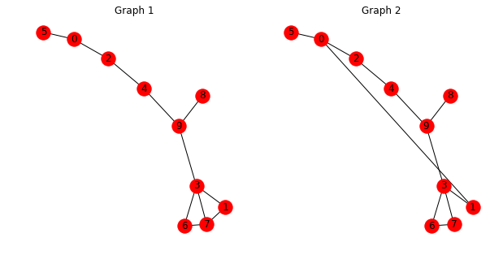
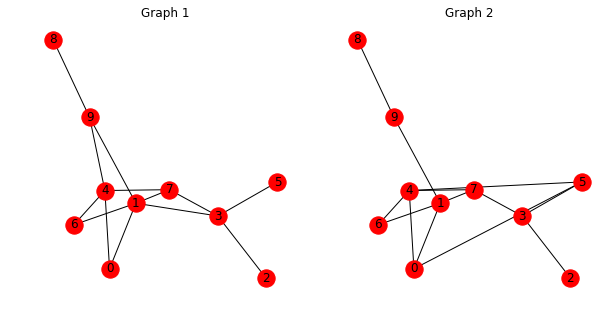
Build the computation graph for visualization.
n_graphs = graphs.n_graphs
model_inputs = placeholders.copy()
del model_inputs['labels']
graph_vectors = model(n_graphs=n_graphs, **model_inputs)
x, y = reshape_and_split_tensor(graph_vectors, 2)
similarity = compute_similarity(config, x, y)
layer_outputs = model.get_layer_outputs()def build_matchings(layer_outputs, graph_idx, n_graphs, sim):
"""Build the matching attention matrices from layer outputs."""
assert n_graphs % 2 == 0
attention = []
for h in layer_outputs:
partitions = tf.dynamic_partition(h, graph_idx, n_graphs)
attention_in_layer = []
for i in range(0, n_graphs, 2):
x = partitions[i]
y = partitions[i + 1]
a = sim(x, y)
a_x = tf.nn.softmax(a, axis=1) # i->j
a_y = tf.nn.softmax(a, axis=0) # j->i
attention_in_layer.append((a_x, a_y))
attention.append(attention_in_layer)
return attentionattentions = build_matchings(
layer_outputs, placeholders['graph_idx'], n_graphs,
get_pairwise_similarity(config['graph_matching_net']['similarity']))sim, a = sess.run([similarity, attentions],
feed_dict=fill_feed_dict(placeholders, (graphs, labels)))print(labels)
print(sim)[ 1 -1]
[-0.19060427 -2.23995686]Similarity for positive pair is much higher than the similarity for the negative pair.
Remember that with a margin loss and Euclidean distance, which is how this model is trained, the similarity value is the negative distance. In this case the distance for positive pair is quite small, while the distance between two graphs in the negative pair is large.
Some tools for visualizing attention
def _plot_graph_matching_on_axis(ax, g_base, pos, att, title=None):
"""Plot graph matching on an axis."""
original_edges = g_base.edges()
g = g_base.copy()
n1, n2 = att.shape
alpha = []
att_edges = []
for i in range(n1):
for j in range(n2):
g.add_edge(i, j + n1)
att_edges.append((i, j + n1))
alpha.append(att[i][j])
nx.draw_networkx_nodes(
g, pos, nodelist=range(n1), node_color='lavender', linewidths=3, ax=ax)
nx.draw_networkx_nodes(
g, pos, nodelist=range(n1, n1 + n2), node_color='wheat', linewidths=3,
ax=ax)
nx.draw_networkx_edges(
g, pos, edgelist=original_edges, edge_color='k', width=3, ax=ax)
for i in range(len(att_edges)):
nx.draw_networkx_edges(
g, pos, edgelist=att_edges[i:i+1], edge_color='g', alpha=alpha[i],
ax=ax, width=3)
ax.axis('off')
if title:
ax.set_title(title)
# set xlim and ylim
coords = np.array(list(pos.values()), dtype=np.float32)
x_min, y_min = coords.min(axis=0)
x_max, y_max = coords.max(axis=0)
x_len = x_max - x_min
y_len = y_max - y_min
ax.set_xlim([x_min - x_len * 0.05, x_max + x_len * 0.05])
ax.set_ylim([y_min - y_len * 0.05, y_max + y_len * 0.05])
def plot_graph_matching_pair(g1, g2, matchings, pos=None, seed=0):
"""Plot a pair of graphs and the matchings between them.
Args:
g1: a networkx graph.
g2: a networkx graph.
matchings: a pair of n1 x n2 matrices.
pos: a position dictionary, if provided.
Returns:
pos: position dictionary, used for other plots between these two graphs.
"""
n1 = g1.number_of_nodes()
n2 = g2.number_of_nodes()
assert n1 >= n2
if pos is None:
with reset_random_state(seed=seed):
pos1 = nx.spring_layout(g1)
pos1_values = np.array(list(pos1.values()), dtype=np.float32)
pos1_values -= pos1_values.mean(axis=0, keepdims=True)
pos2_values = pos1_values[n1-n2:] + np.array([
pos1_values[n1-n2:, 0].max(axis=0) * 2 -
pos1_values[n1-n2:, 0].min(axis=0), 0])
pos = {k: pos1_values[k] for k in pos1.keys()}
pos.update({(k + n2): pos2_values[k-(n1-n2)]
for k in list(pos1.keys())[n1-n2:]})
g_base = nx.Graph()
g_base.add_nodes_from(range(n1))
g_base.add_nodes_from(range(n1, n1 + n2))
g_base.add_edges_from(g1.edges())
g_base.add_edges_from([(i + n1, j + n1) for i, j in g2.edges()])
fig, ax = plt.subplots(1, 2, figsize=(11.2, 4.8))
_plot_graph_matching_on_axis(
ax[0], g_base, pos, matchings[0], title='left attend to right')
_plot_graph_matching_on_axis(
ax[1], g_base, pos, matchings[1], title='right attend to left')
fig.tight_layout(pad=0, h_pad=0, w_pad=0)
return posVisualize how the attention pattern changes across layers
# visualize the attention across layers for the positive pair
plt.close('all')
for i in range(len(a)):
_ = plot_graph_matching_pair(nx_graphs[0], nx_graphs[1], a[i][0])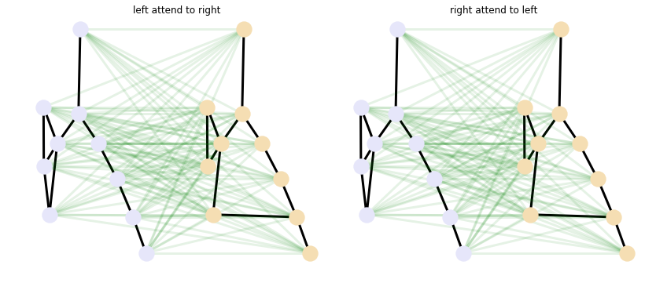
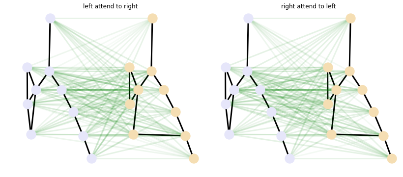
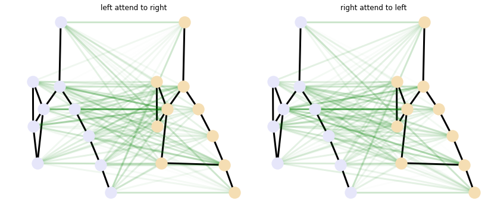
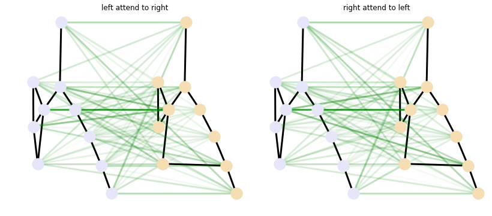
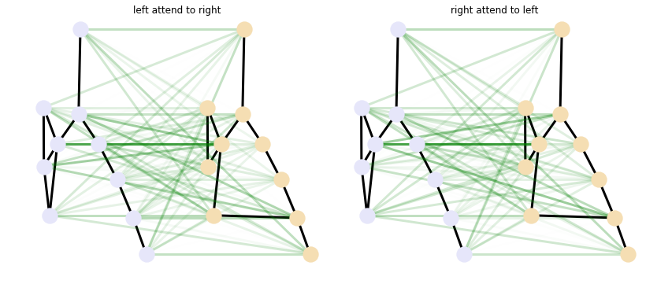
Note that the left-to-right and right-to-left attention patterns are slightly different. Also the attention pattern starts almost uniform, and then gets more concentrated after a few layers.
If we train the model for longer, we can see a clearer matching pattern.
# negative pair
plt.close('all')
for i in range(len(a)):
_ = plot_graph_matching_pair(nx_graphs[2], nx_graphs[3], a[i][1])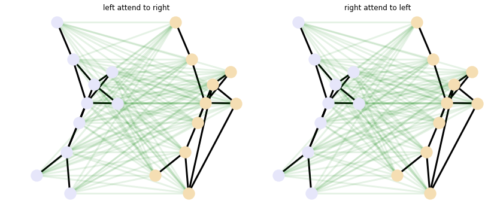
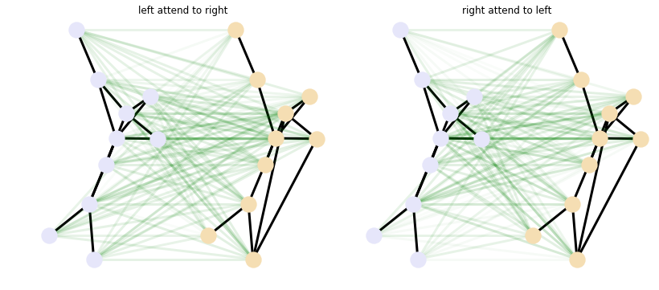
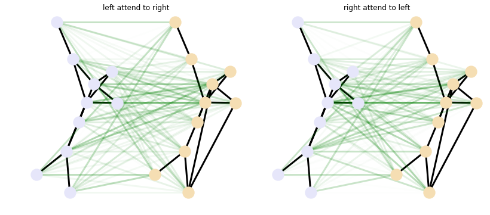
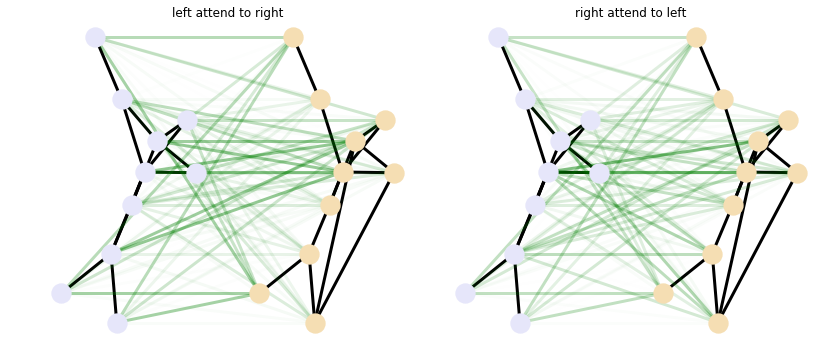
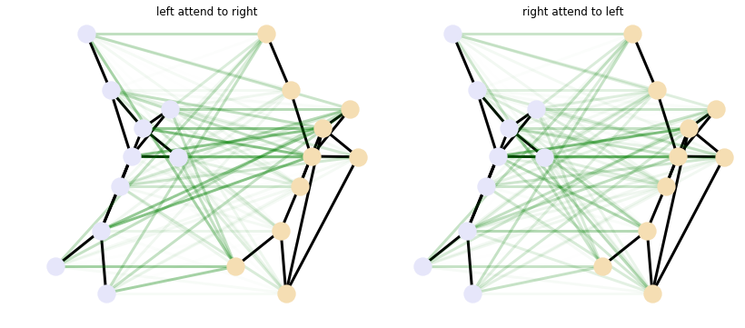
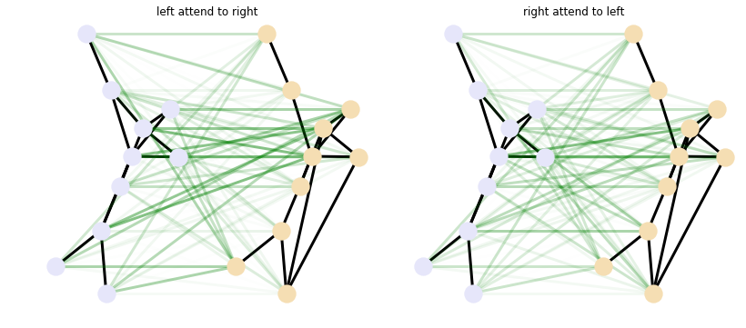